ボンゴレビアンコ、タラコスパ、明日のフルーツポンチ
ボンゴレビアンコ、タラコスパ、明日のフルーツポンチ
やってもうた。前の記事からの流れ夕飯もドキュメントしてやろうと思ったら肝心のできあがり写真だけが撮影できていないというていたらく。まぁしょうがない、とりあえず写真は撮ってしまったので記事は書く。
帰宅中の妻から連絡があって、冷蔵庫にある挽肉を使おうと思ったのだが、おおなんということだ。消費期限が二日前である。急遽メニューを変更し、あさりを食べたいという妻のために大人はボンゴレビアンコ、子供はタラコスパということになった。
何故か自分はボンゴレロッソは好きではない。なのでボンゴレはビアンコで。妻は自分とつきあうまでボンゴレは食べたことなかったらしいので、しれっと、ボンゴレ＝白である、と若干バイアスのかかった情報を伝えた。よろしい。
我が家のボンゴレは基本的に「アサリとタマネギの炒め物」をパスタと混ぜる、という代物である。本当のレシピは…とか言うのはどうでもいい。俺がそう食べたいのでそうする。
タマネギはパスタと絡める時にはドロドロに溶けててほしい。これはボンゴレでなくてもそう思っている。なのでまずタマネギをたっぷりみじん切りにしてから…
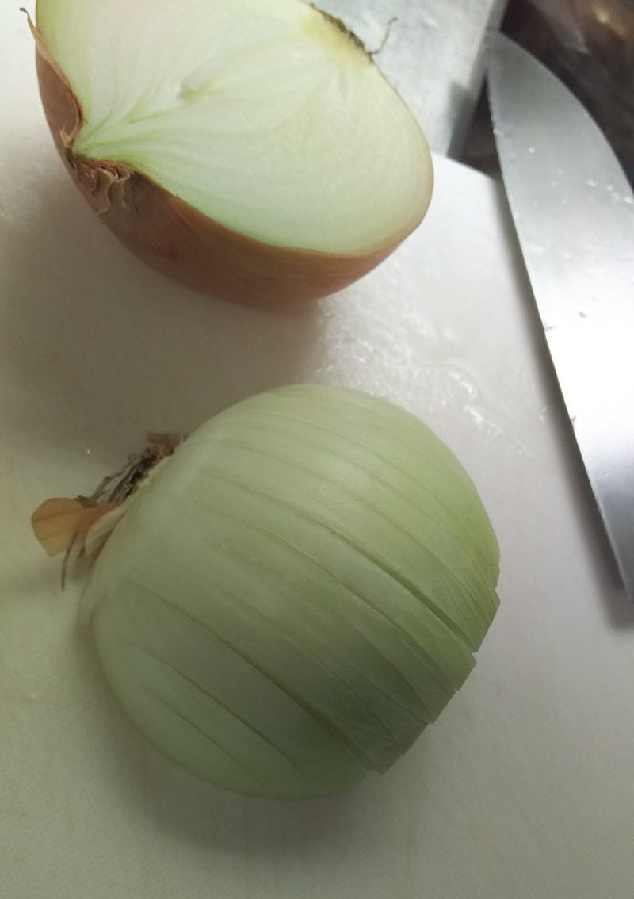
焦げ付かないように水を追加しながら執拗に苛める。
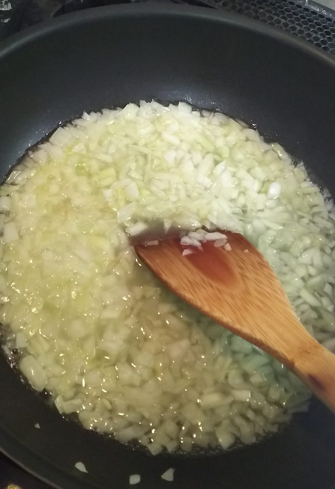
コンソメも入れて苛める。
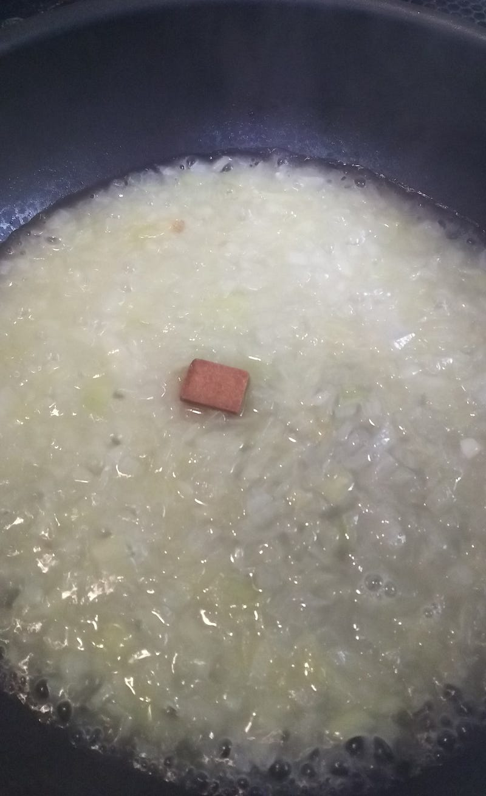
まぁこれくらいで勘弁してやる。
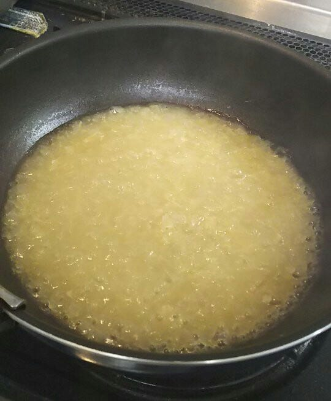
今回は急遽ボンゴレとなったので生あさりを買ってきて砂抜きとかしてる時間はない。なので全部缶詰。缶詰のアサリはそのままぶち込むとちょっと臭いが気になるのでまず単体でワインで軽く酒蒸し。
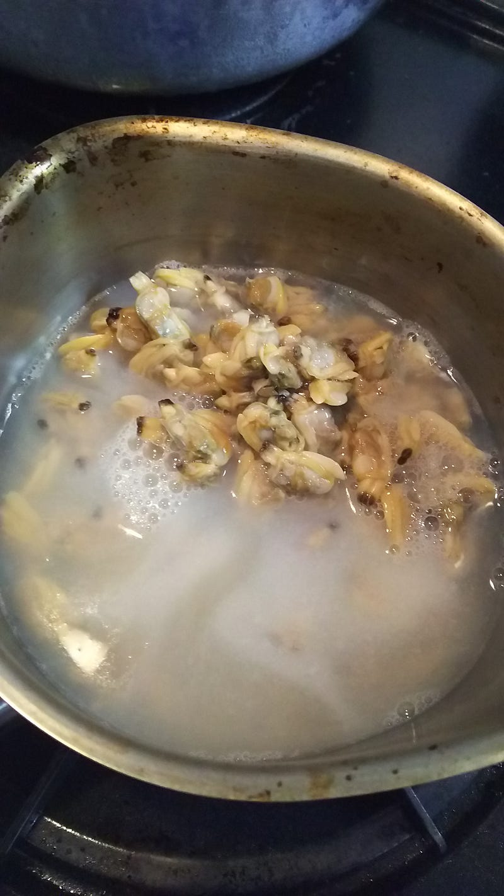
軽く煮てアルコールも飛んだら、先ほどのタマネギ、それにオリーブオイルと合わせる。オリーブオイルをケチるくらいならスパゲティを食べてはいけない。オリーブオイルはしっかり。
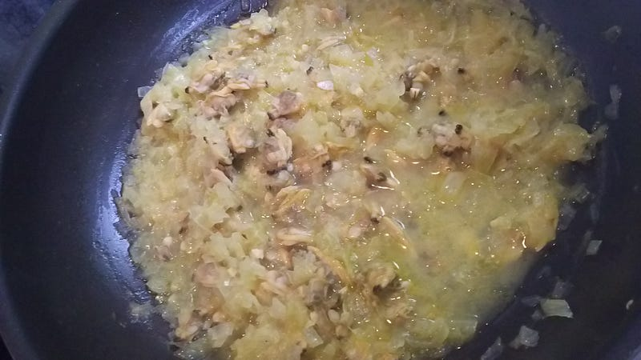
ここで一休み。子供らが支度をしたり、風呂に入ったりのタイミングがあるのでその間に明日の朝のフルーツポンチを作る。
我が家では次男が便秘さんなので、それを少しでも解消するために今年に入ってから毎朝フルーツポンチを食べているのだ。なんか毎日フルーツってちょっとブルジョアっぽいけど、ハナマサの安い大量のバナナと、見切り品や旬で安いフルーツを混ぜればそれなりに安くあがる。
というわけでもう2ヶ月くらい毎日作ってるのでこちらも手慣れてきた。
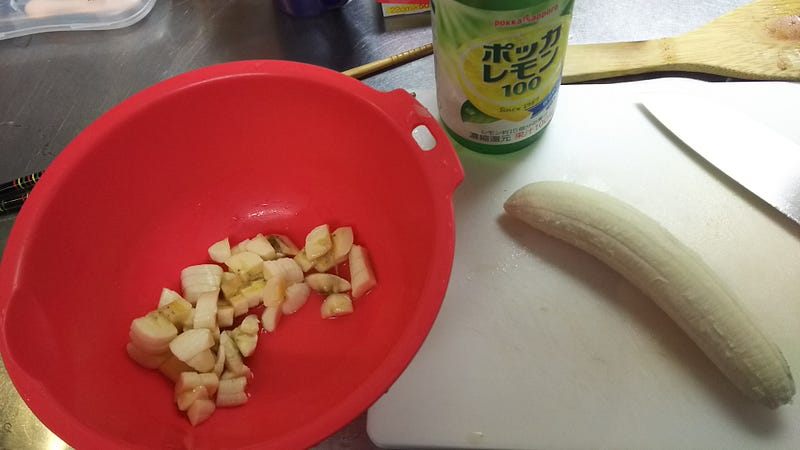
バナナ2本。黒いバナナを食べたいのでなければレモン汁を忘れずに。
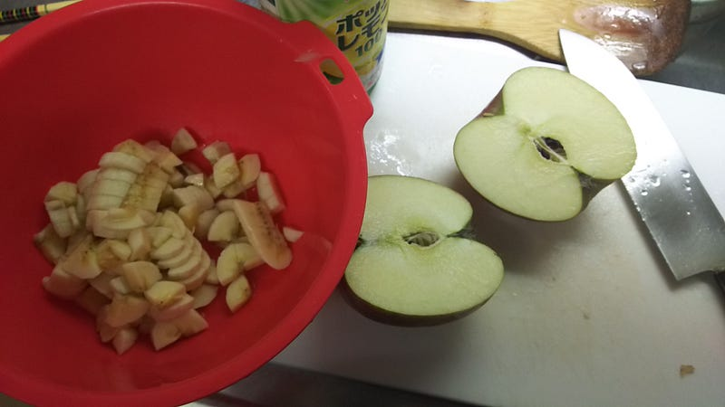
林檎 1/4個。明日も美味しく食べたければ切断面にレモン汁をつけてから保存するのを忘れずに。
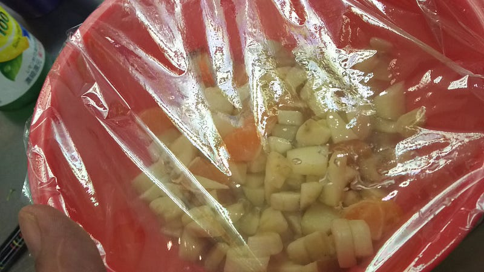
見切り品のみかんを1個入れて、水を少し足して、砂糖を軽く一かけ。混ぜて、できあがり。これで4人分。
さて、子供達のアップが終わったのでパスタ作ります。今回書いてないけど、パスタの付け合わせは冷やしトマトと、鶏のミートローフ。鶏のミートローフは確か飯島奈美さんのレシピ。超簡単でうまいので、またそのうち紹介。
で、タラコスパ。まず先にタラコの先っちょだけ切っておいて、中身を出しておき、そこにオリーブオイルやめんつゆを少々。
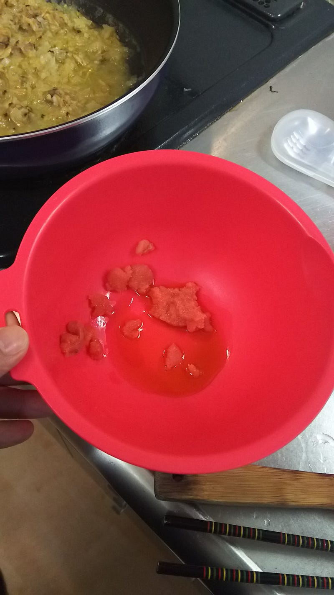
子供達の麺は一人前の半分ずつ。食べやすいように半分に折っておきます。
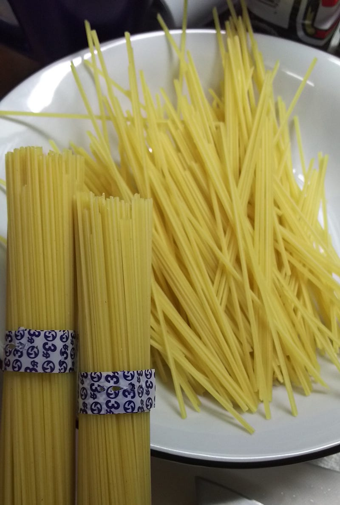
ママーの早茹で麺、最強ですね。
マ・マー 早ゆで3分スパゲティ1.6mm チャック付結束タイプ 500g×4個がパスタストアでいつでもお買い得。お急ぎ便対象商品は当日お届けも可能。アマゾン配送商品は通常配送無料（一部除く）。amzn.to
ここでのポイントは2品作ってるので決して大人の分を同時に茹でない事です。パスタは慌てたら負け。
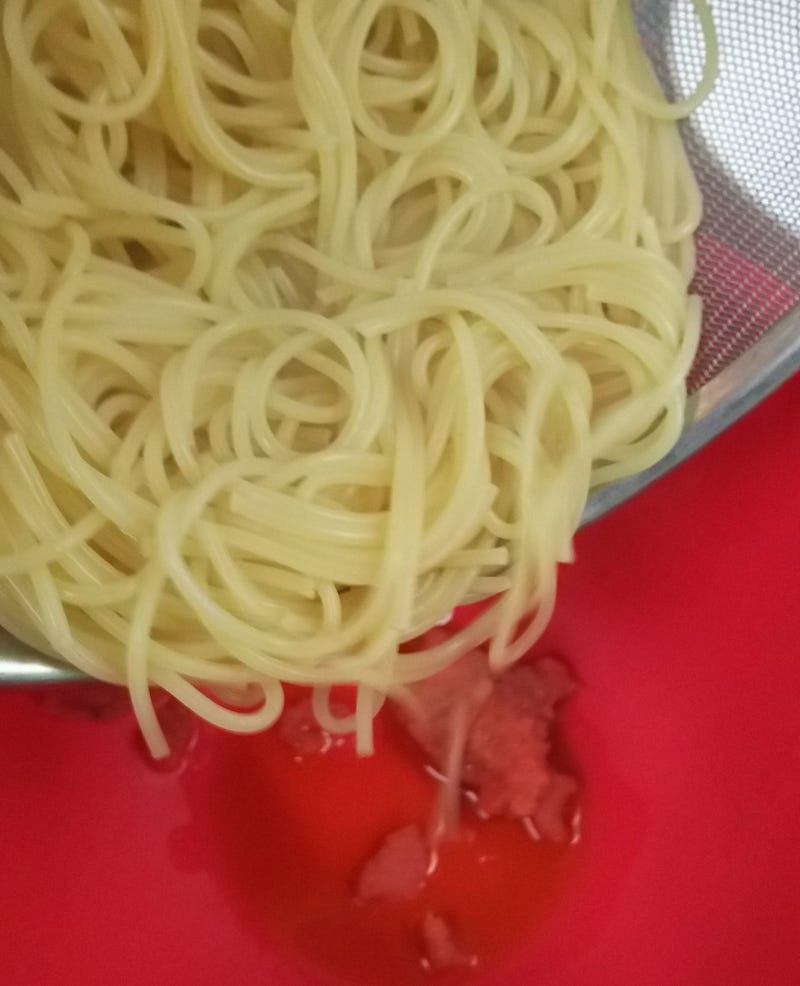
はい、混ぜたらできあがり。熱いうちに食え！
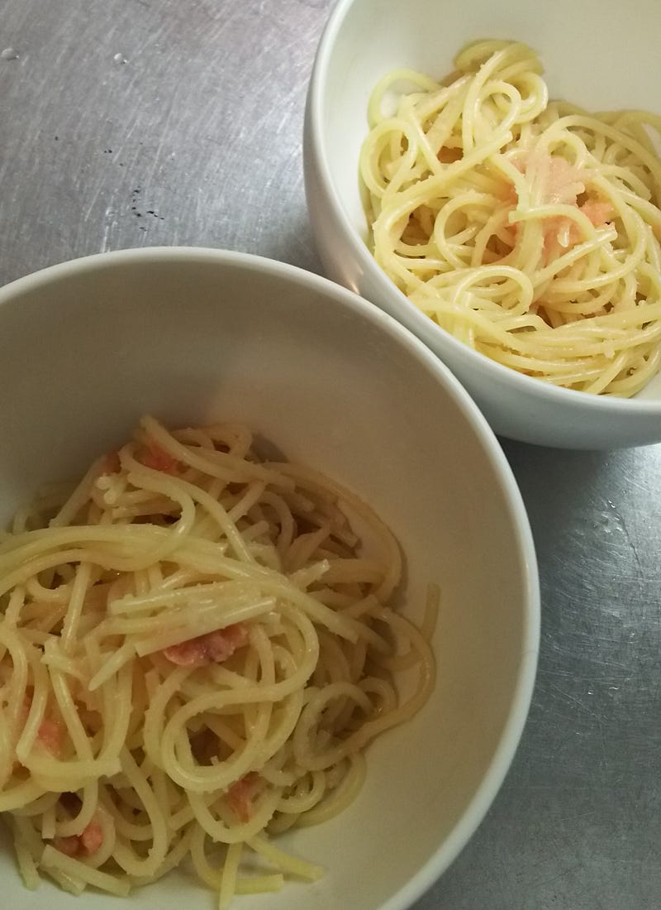
で、大人のほうも茹でて、サラダと一緒にいただきます。
冒頭で書いた通りできあがりの写真がありません。ちゃんとシャッター音したのに何故だ…
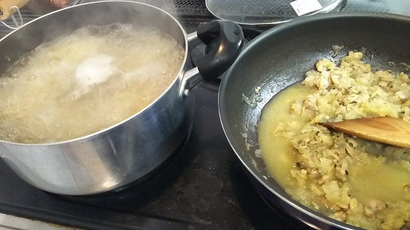
見て分かるかもしれないけれども、これはかなりアサリが多めのボンゴレ。ボンゴレ頼んだのに、（大きい、良いアサリなのかもしれないけど）皿の中にあさりが6個くらいしか入ってない、みたいな店多すぎるでしょ。ボンゴレ食べたい、って言ってるんだからアサリが食べたいんだよ！
そういう理由で我が家のボンゴレはアサリたっぷりボンゴレです。最終的には水分も良い感じでギリギリのところにしてから合わせてるし、オリーブオイルで良い感じに乳化してるのでパスタと絡まって良い感じになります。
というわけで今日はたくさん料理した。
そしてこの後めっちゃくちゃ皿洗いした。パスタは無駄に洗う食器が増える。